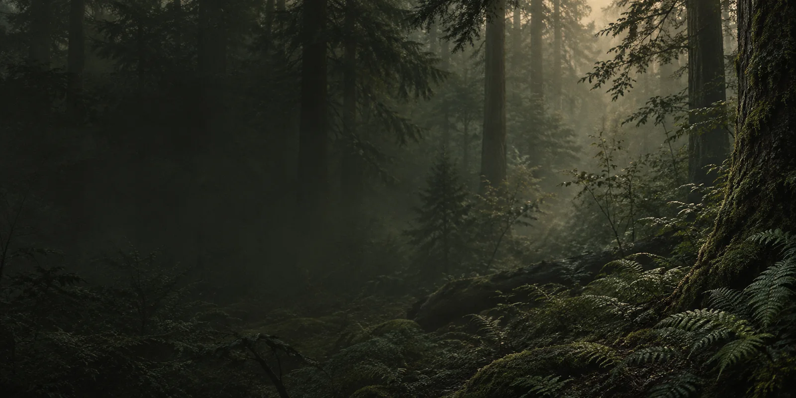

Pomodoro
A protected interval
Protect the next 25 minutes.
Press the dial to begin. Choose what the time was for when the full ritual ends.
Round 1 of 4
Today
Protect the time first. Name the work when the session ends.

A protected interval
Press the dial to begin. Choose what the time was for when the full ritual ends.
Queue
Overview
Sessions and active goals, at a glance.
Complete a session to start your activity record.